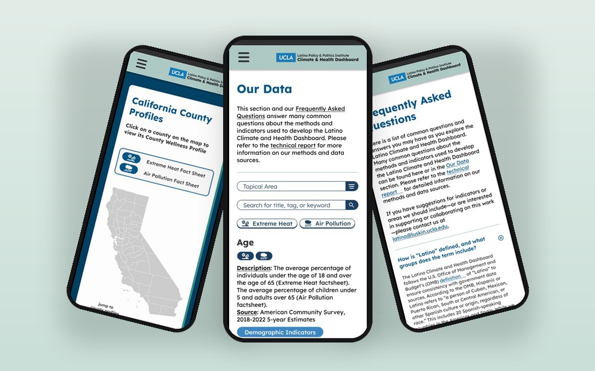
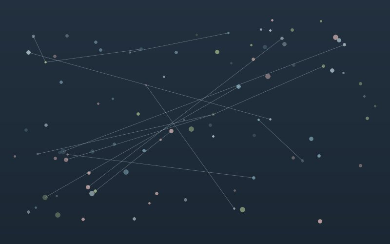

projects
things i've designed & built
selected ux/ui design and research work.
for everything else, peek at the design gallery →

Ginkgo
A culturally-aware therapist-matching app that makes finding the right care feel less overwhelming.

Latino Climate & Health Dashboard
A first-of-its-kind public dashboard turning neighborhood-level climate & health data into county factsheets.
impact6,000+ users · cited in Health Affairs

aniXmate
An anime recommendation app that works like a dating app — type a show you love and swipe through your next watch.

Reimagining Ultimate Guitar
A research-led redesign of the guitar-tab site i actually use — my first full UX process, end to end.

UCLA MAAPP Voting Map
An interactive map of Asian-American political potential, built for UCLA Political Science & Asian American Studies.

Geographies of Affect
Mapping emotion across place in nearly 1,000 Holocaust survivor testimonies — sentiment analysis, NLP, and geocoding, with an honest look at their limits.